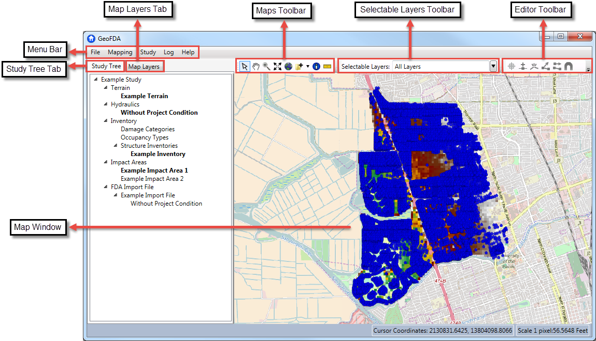

Main Window
The GeoFDA main window displays the GeoFDA user interface. The user interface allows the user to create a new study, open an existing study, and analyze and edit several elements within the study. The main window is comprised of the Menu Bar, three Tool Bars, the Map Window, the Study Tree tab, and the Map Layers tab.

Menu Bar
The Menu Bar consists of File, Mapping, Study, Log, and Help menus.
- File: Create New Study, Open Existing Study, Close Existing Study, Save, Save As, Exit
- Mapping: Add Map Layer, Add Web Layer, Map Properties
- Study: Porperties, Analysis Years, Terrain, Hydraulics, Inventory, Impact Areas, FDA Import File
- Log: View Log File
- Help: Help, Quickstart Guide, About
Map Window
The Map Window provides a way to graphically display your project elements. All of the selected map layers will be displayed. You can also quickly add map layers by draging and dropping files from your computer into the window.
Maps Toolbar
The Maps Toolbar provides tools to select items on the map, scroll, resize, add map layers, view information about map objects, and measure between user selected points.
Selectable Layers Toolbar
The Selectable Layers Toolbar allows you to choose which layers in the map window that you want to select from with the selection tool.
Editor Toolbar
The Editor Toolbar provides several features that are used to manipulate points, lines, and polygons.
Study Tree
The Study Tree tab provides a view of the project in a tree format. You can collapse and expand several of the items in the study by clicking the black triangle to the left of the item. You use the Study Tree to add, remove, or edit data in your project. Right click on an item in the tree to see what options are available.
Map Layers
The Map Layers tab lists all of the map layers that have been added to your project. You can select or unselect map layers by clicking the check box next to each item. The corresponding map layer will appear or disappear in the Map Window. By right clicking the name of a map layer several options appear.